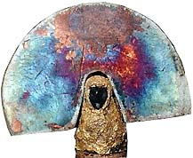

Australian raku artist Irene Poulton shares with us some of her
raku glaze recipes. Please take note of general
health and safety precautions when using these glazes.
Some ingredients are toxic. Please read the disclaimer.
Irene has more recipes on her web page at http://members.iinet.net.au/~shaper.
Unless otherwise stated all glazes are fired to around 1000
oC or until shiny, then reduced in sawdust.
Irene also uses a commercial brand of Borax that you can buy from
the supermarket.
Turquoise
| Frit 4110 |
80 |
| Nepheline Syenite |
20 |
| Ballclay |
5 |
| Copper Carb |
5 |
| Bentonite |
3 |
Chatreuse Green
| Frit 4110 |
80 |
| Tin Oxide |
4 |
| Red Iron Oxide |
1 |
| Pot Bichromate (toxic) |
8 |
| Bentonite |
3 |
Jade Green
| Gerstley Borate |
23.6 |
| Frit 4108 |
41.6 |
| Kaolin |
34.8 |
| Tin Oxide |
5 |
| Copper Carb |
5 |
| Bentonite |
1 |
Copper Blue/Red
| Ballclay |
86 |
| Frit 4108 |
15 |
| Zirconium |
15 |
| Copper Carb |
10 |
Copper Red
| Frit 4108 |
40 |
| Frit 4110 |
40 |
| Kaolin |
10 |
| Borax |
10 |
| Copper Oxide |
4 |
| Tin Oxide |
5 |
Red Bronze Luster
| Frit 4108 |
50 |
| Gerstley Borate |
50 |
| Tin Oxide |
3 |
| Black Copper Oxide |
2.5 |
Metallic Red 1
| Borax |
50 |
| Gerstley Borate |
50 |
| Copper Carb |
5 |
| Red Iron Oxide |
10 |